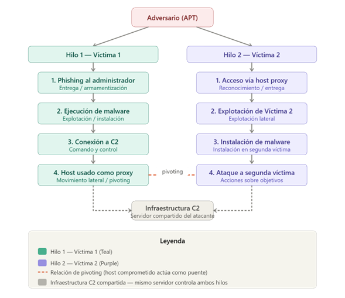

Institución: Universidad Politécnica de San Luis Potosí Materia: CNO V – Seguridad Informática Equipo:
Ávalos Rangel Hazel Mario – 181801
Cabrera Meza Jorge Alejandro – 181591
González Delgado Ángel Josué – 182837
López Castro Diego – 182032
López Monsiváis Jorge Emmanuel – 179842 Profesor: Mtro. Servando López Contreras Fecha de entrega: 15 – Mayo – 2026
Introducción
La ciberseguridad moderna enfrenta un panorama de amenazas en constante
evolución, donde los ataques dirigidos ya no pueden analizarse como eventos
aislados. La sofisticación de los grupos de amenazas persistentes avanzadas (APT,
por sus siglas en inglés) exige marcos analíticos que permitan correlacionar
evidencia técnica, comprender la intención del adversario y anticipar patrones de
comportamiento futuros. En este contexto, el Modelo Diamante de Análisis de
Intrusiones emerge como una herramienta fundamental para los equipos de
respuesta a incidentes y los analistas de inteligencia de amenazas.
Propuesto por Caltagirone, Pendergast y Betz en 2013, el Modelo Diamante ofrece
una estructura conceptual que descompone cualquier evento de intrusión en cuatro
elementos interrelacionados: el adversario, la capacidad técnica empleada, la
infraestructura utilizada y la víctima objetivo. Esta representación no sólo facilita el
análisis forense de un incidente individual, sino que también permite construir hilos
de actividad que revelan campañas coordinadas, pivoting entre víctimas y el modus
operandi del atacante a lo largo del tiempo.
La presente actividad aplica el Modelo Diamante sobre un escenario realista de
intrusión, complementando el análisis con la Cadena de Eliminación Cibernética
(Cyber Kill Chain) de Lockheed Martin y las tácticas, técnicas y procedimientos
documentados en el framework MITRE ATT&CK. El objetivo es demostrar cómo la
integración de estos marcos metodológicos produce un entendimiento profundo y
estructurado del comportamiento del adversario, condición indispensable para una
defensa informada y proactiva.
Marco Teórico
2.1 El Modelo Diamante de Análisis de Intrusiones
El Modelo Diamante (Caltagirone et al., 2013) parte de un axioma central: todo
evento de intrusión cibernética puede ser representado como la relación entre un
adversario que utiliza una capacidad sobre una infraestructura para afectar a una
víctima. Esta relación forma la figura de un diamante cuyos vértices son los cuatro
elementos fundamentales del modelo, y cuyos ejes codifican la dirección de la
actividad maliciosa.
A diferencia de los modelos puramente procedimentales, el Modelo Diamante
adopta una perspectiva centrada en el adversario. Esto significa que el eje analítico
no es la secuencia técnica del ataque, sino la relación entre quien ataca, con qué lo
hace, desde dónde y a quién. Esta orientación permite trasladar el análisis desde la
simple detección de indicadores de compromiso (IoC) hacia la comprensión del
comportamiento del atacante, lo cual es significativamente más robusto frente a la
rotación de infraestructura y herramientas que caracteriza a los grupos APT.
2.1.1 Elementos del modelo
Adversario: Corresponde al actor de amenaza; puede ser un individuo, un grupo
organizado o un estado-nación. Incluye tanto al operador (quien ejecuta el ataque)
como al patrocinador (quien lo financia o dirige). La identificación del adversario es
el elemento más difícil de establecer con certeza, razón por la cual el modelo permite
el análisis incluso cuando este vértice permanece parcialmente desconocido. Capacidad: Se refiere al arsenal técnico del adversario: malware, exploits,
herramientas de post-explotación y en general cualquier método o procedimiento
empleado para comprometer al objetivo. Las capacidades son analizadas en
términos de sus características técnicas (firmas, comportamiento, persistencia) para
correlacionarlas con otros eventos o campañas conocidas. Infraestructura: Comprende los recursos físicos y lógicos usados para sostener el
ataque: dominios maliciosos, servidores de Comando y Control (C2), direcciones IP,
cuentas comprometidas utilizadas como intermediarios. El modelo distingue entre
infraestructura de tipo 1 (controlada directamente por el adversario) e infraestructura
de tipo 2 (recursos de terceros comprometidos para ser usados como relevo o
anonimización). Víctima: Es el objetivo del evento de intrusión. Puede ser una persona, un sistema,
una red o una organización. El modelo distingue entre víctima persona (target) y
víctima activo (asset), reconociendo que el verdadero objetivo del adversario puede
ser el activo de información dentro del sistema, no el sistema en sí mismo.
2.1.2 Metacaracterísticas del evento
Además de los cuatro vértices, el modelo incorpora seis metacaracterísticas que
enriquecen la descripción de cada evento: marca de tiempo (timestamp), fase dentro
de la cadena de ataque, resultado obtenido por el adversario, dirección del evento
(desde adversario hacia víctima o viceversa), metodología empleada y recursos
requeridos. Estas metacaracterísticas transforman el análisis de un simple registro
de eventos en una descripción estructurada que puede ser comparada, clasificada
y correlacionada sistemáticamente (Caltagirone et al., 2013).
2.1.3 Hilos de actividad y grafos de actividad
Una de las contribuciones más valiosas del Modelo Diamante es el concepto de hilo
de actividad (activity thread). Un hilo representa la secuencia ordenada de eventos
de intrusión que corresponde a una campaña contra un objetivo específico. Cuando
el adversario expande su ataque a múltiples víctimas —típicamente mediante
pivoting desde un host comprometido— se generan múltiples hilos interrelacionados
que forman un grafo de actividad. Este grafo revela patrones de movimiento lateral,
reutilización de infraestructura y técnicas de persistencia que serían invisibles si los
eventos se analizaran de manera aislada.
2.2 La Cyber Kill Chain
Desarrollada por Hutchins, Cloppert y Amin (2011) en Lockheed Martin, la Cyber Kill
Chain describe las siete fases secuenciales de un ataque dirigido: reconocimiento,
armamentización, entrega, explotación, instalación, Comando y Control (C2), y
acciones sobre objetivos. Su contribución principal es la idea de que interrumpir
cualquier fase de la cadena rompe la capacidad del adversario para alcanzar su
objetivo final.
La Kill Chain es complementaria al Modelo Diamante: mientras el diamante describe
los actores y sus relaciones en cada evento, la Kill Chain ubica ese evento dentro
de una progresión temporal. La combinación de ambos marcos permite responder
tanto a «qué pasó y quién lo hizo» como a «en qué momento de la campaña ocurrió
y qué oportunidad de interrupción existía».
2.3 MITRE ATT&CK y la inteligencia de amenazas
El framework MITRE ATT&CK (Adversarial Tactics, Techniques and Common
Knowledge) documenta el comportamiento de adversarios reales en matrices
organizadas por tácticas y técnicas. Su integración con el Modelo Diamante permite
mapear las capacidades identificadas en un evento con TTPs específicos,
facilitando la atribución, la priorización de defensas y la detección proactiva
mediante reglas de detección basadas en comportamiento (MITRE ATT&CK, 2024).
Esta triada analítica —Modelo Diamante, Kill Chain y ATT&CK— constituye el
estándar de facto para el análisis de intrusiones en contextos de Cyber Threat
Intelligence (CTI), estableciendo un lenguaje común entre equipos de detección,
respuesta a incidentes y análisis estratégico.
2.4 Pivoting y movimiento lateral en campañas APT
El pivoting es una técnica mediante la cual el adversario utiliza un sistema
comprometido como trampolín para acceder a segmentos de red adicionales o a
nuevas víctimas. Desde la perspectiva del Modelo Diamante, el pivoting genera un
nuevo hilo de actividad en el que el host comprometido funciona como
infraestructura de tipo 2: un recurso ajeno que el atacante ha cooptado para sus
propósitos. Esta técnica es especialmente efectiva porque el tráfico malicioso
emerge de direcciones IP internas con aparente legitimidad, eludiendo controles
perimetrales como firewalls y sistemas de detección de intrusiones basados en
reputación (NIST, 2018).
La detección del movimiento lateral requiere análisis de comportamiento de red
(NBA), correlación de logs y supervisión de autenticaciones laterales (pass-thehash, pass-the-ticket, uso de credenciales legítimas en horarios atípicos). La
construcción de hilos de actividad mediante el Modelo Diamante es una herramienta
privilegiada para identificar estos patrones, ya que la reutilización de infraestructura C2, la similitud en las capacidades y la coincidencia temporal entre eventos forman
una firma de campaña difícil de ofuscar completamente.
Parte 01. Comprensión del modelo — Tabla conceptual
Elemento
Descripción
Ejemplo práctico
Adversario
Actor malicioso que lleva a cabo el ataque
(individuo o grupo APT)
Grupo APT28 (Fancy Bear),
atacante de estado-nación
Capacidad
Herramientas, técnicas y procedimientos
(TTPs) del atacante
Malware tipo RAT, exploit de vulnerabilidad
zero-day en Office
Infraestructura
Recursos físicos o lógicos usados
para ejecutar el ataque
(servidores C2)
Dominio malicioso update-srv.net,
servidor VPS en Rusia
Víctima
Entidad objetivo del ataque;
persona, sistema u organización
Empresa de infraestructura crítica;
equipo Windows de empleado
Parte 02. Análisis de evento (modelo Diamante)
Metacaracterísticas
Descripción del evento
Marca del tiempo
Momento en que los logs registran
conexiones salientes a IPs externas del C2
Fase
Comando y Control (C2) — Kill Chain fase 6;
el malware ya fue instalado y establece canal
con el servidor del atacante
Resultado
Múltiples hosts comprometidos,
canal C2 activo,
posible exfiltración de datos
o movimiento lateral en progreso
Malware con dominio C2 embebido;
resolución DNS hacia IPs externas;
pivoting desde hosts infectados
hacia nuevos objetivos
Recursos
Dominios C2, IPs externas (VPS),
WHOIS, logs de red,
herramienta de análisis DNS
¿Quién es el adversario? Un actor de amenaza externo (posiblemente un grupo
APT), identificado indirectamente a través de WHOIS/IP que revela un posible
origen geográfico del atacante. ¿Cuál es la capacidad utilizada? Malware con módulos de Comando y Control
(C2) embebidos, capaz de resolver dominios y establecer conexiones persistentes
hacia servidores externos. ¿Qué tipo de infraestructura se emplea? Infraestructura de tipo 2 (controlada por
el atacante): dominios maliciosos y servidores VPS externos a los cuales el malware
reporta. ¿Quién es la víctima primaria? La organización cuyo equipo detectó el malware
inicialmente; los hosts que muestran tráfico anómalo hacia las IPs externas. ¿Existe evidencia de movimiento lateral? Sí. Los logs muestran múltiples hosts
conectándose a las mismas IPs externas del C2, lo que indica que el malware se
propagó desde el vector inicial hacia otros equipos de la red.
Parte 03. Relación con la Kill Chain
Evento
Fase Kill Chain
Detección de malware
Fase 5 — Instalación:
el malware ya fue depositado
y ejecutado en el sistema víctima
Envío de phishing
Fase 2 — Armamentización /
Fase 3 — Entrega:
correo malicioso como vector
de entrega inicial
Conexión a C2
Fase 6 — Comando y Control (C2):
canal de comunicación con
el atacante establecido
Ejecución de malware
Fase 6 — Comando y Control (C2):
canal de comunicación con
el atacante establecido
Parte 04. Hilos de actividad

Figura 1 Hilos de actividad.
Descripción de los hilos
Hilo 1 (Víctima 1): El adversario envía un correo de phishing dirigido al
administrador → el destinatario abre el adjunto malicioso y ejecuta el malware → el
malware establece canal C2 con el servidor del atacante → el host comprometido
empieza a ser usado como proxy para atacar internamente. Hilo 2 (Víctima 2): Usando el host de Víctima 1 como trampolín (pivoting), el
adversario accede a Víctima 2 desde una IP interna confiable → explota
vulnerabilidades del nuevo objetivo → instala malware en el segundo sistema →
ejecuta acciones finales (exfiltración, reconocimiento adicional, etc.). Relación de pivoting: Víctima 1 comprometida actúa como proxy interno, lo que le
permite al atacante evadir controles perimetrales y atacar a Víctima 2 desde una
dirección IP interna de confianza. Ambos hilos comparten la misma infraestructura
C2.
Conclusión y reflexión técnica del estudiante
Desde una perspectiva técnica, el análisis del escenario presentado demuestra con
claridad la utilidad operacional del Modelo Diamante como marco de inteligencia de
amenazas. La detección inicial del malware no constituye el fin del proceso analítico,
sino su punto de partida. Al descomponer el incidente en sus cuatro vértices
adversario, capacidad, infraestructura y víctima y enriquecerlo con las seis
metacaracterísticas, el analista obtiene una representación estructurada que
trasciende el indicador de compromiso individual y revela la arquitectura de la
campaña.
La integración del Modelo Diamante con la Cyber Kill Chain revela que, en el
escenario analizado, el adversario alcanzó al menos la fase 6 (Comando y Control)
y presentó indicios claros de transición hacia la fase 7 (acciones sobre objetivos) a
través del movimiento lateral. Desde el punto de vista defensivo, esto implica que la
ventana para contener el incidente antes de una exfiltración significativa de
información era estrecha, subrayando la importancia de la detección temprana en
fases previas de la cadena.
El concepto de pivoting, central en la construcción del segundo hilo de actividad,
ilustra una limitación crítica de las defensas perimetrales convencionales: una vez
que el adversario opera desde el interior de la red, la confianza implícita en el tráfico
interno se convierte en un vector de propagación. Este hallazgo refuerza la
necesidad de arquitecturas de seguridad basadas en el principio de mínimo
privilegio y confianza cero (Zero Trust), en las cuales ningún segmento de red es
considerado inherentemente seguro.
En conclusión, el Modelo Diamante no es simplemente un instrumento de
documentación forense; es un marco que transforma la evidencia técnica en
inteligencia accionable. Su fortaleza reside en la capacidad de correlacionar eventos
aparentemente dispersos bajo una lógica de campaña, atribuir comportamiento con
grados razonables de confianza y, críticamente, anticipar los próximos movimientos
del adversario antes de que estos se materialicen. Adoptado como práctica estándar
dentro de un programa de Cyber Threat Intelligence maduro, constituye un
diferenciador sustancial en la capacidad organizacional para resistir y responder a
amenazas avanzadas.
Video
Case study: Maersk Notpetya Ransomware attack - by TheTechForce
MITRE ATT&CK. (2024). ATT&CK framework: Tactics, techniques and procedures.
The MITRE Corporation
https://attack.mitre.org/
National Institute of Standards and Technology. (2018). Framework for improving
critical infrastructure cybersecurity (Version 1.1). U.S. Department of Commerce
https://doi.org/10.6028/NIST.CSWP.04162018